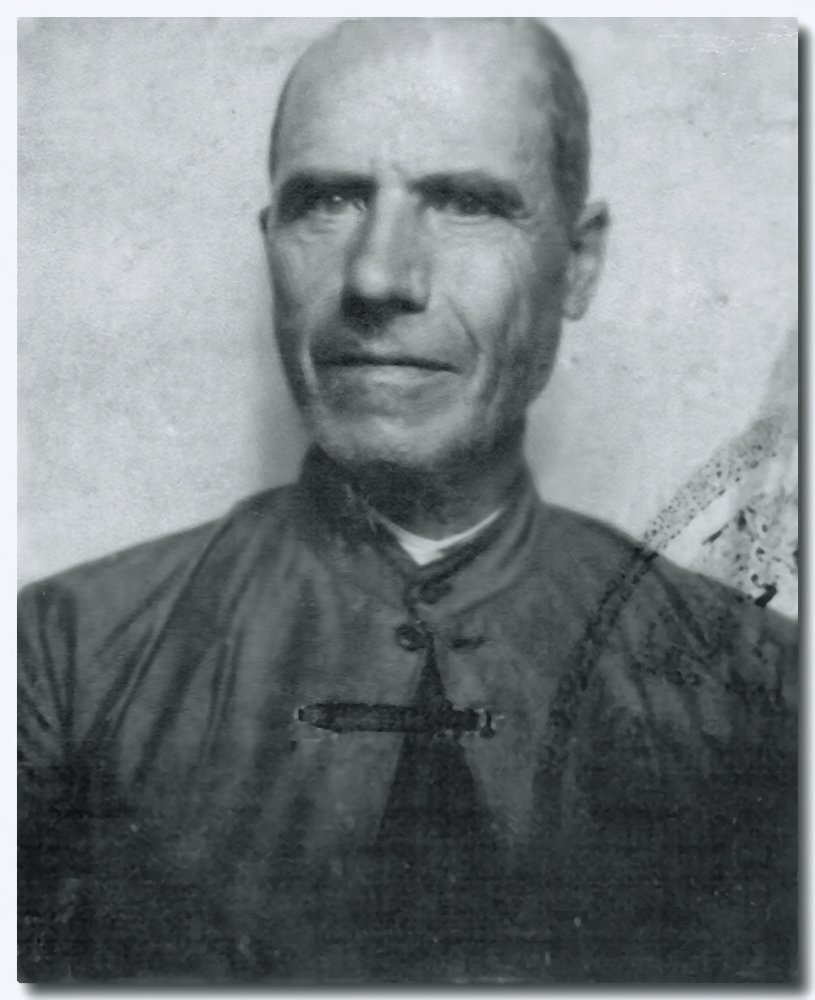
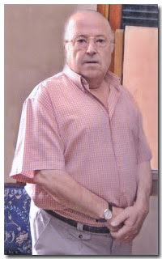
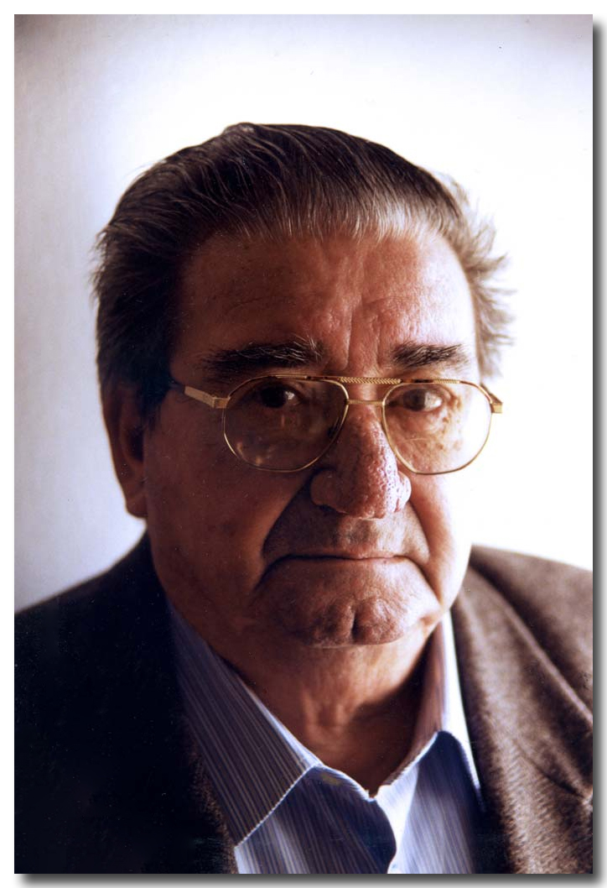

Antonio Alanís Jiménez
Excombatiente de la Guerra de Cuba Nace en Dos Hermanas en la calle Marea (luego, Galileo Galilei, hoy Sta. María Magdalena) en el Corral de Vecinos de la Plazoleta, el día 19 de septiembre de 1875. A su familia se le conocía por los «Cojollos» y a él así se le conoció siempre.
No asiste a la Escuela Pública, al no existir la misma por aquellos tiempos y no poder pagar su padre un Maestro de Escuela a domicilio. Desde muy pequeño se incorpora con su padre a las tareas agrícolas por cuenta ajena. Como soldado de Infantería de Marina se incorpora al Ejército el 7 de Mayo de 1894, embarcando para Cuba: era un soldado de 1,82 de estatura; desembarca en La Habana, tras 22 días de navegación. Entra en combate contra los insurrectos cubanos en las cercanías de Camagüey contra la columna del General Máximo Gómez, cuya carga al machete es horrible. No hay ni vencedores ni vencidos, pero sí muchas bajas por ambas partes; su Jefe el Comandante Cirujeda, es herido.
Durante un año entra en combate cerca de 40 veces; cae enfermo del «vómito negro» lo atiende un médico sevillano —el Capitán Sangrán—, salva la vida, y nuevamente participa en los combates. El 10 de octubre de 1896, con el Comandante Cirujeda, entra en un esporádico ataque cerca de San Pedro, en Punta Brava, contra unos escuadrones de caballería cubana al mando de Antonio Maceo Grajales, General y uno de los líderes de la Insurrección Cubana. Tras tres horas de cargas al machete, sablazos y disparos, muere el General Maceo y los cubanos se retiran con su cadáver; el Comandante Cirujeda ordena toque de clarín y las fuerzas españolas presentan armas al líder cubano caído bravamente. Nuestro biografiado salvó la vida por llevar en la mochila un plato de latón: allí descargó un mambís su machete.
Carnét de Excombatiente de la Guerra de Cuba.
Vuelve a la Habana a reponer fuerzas; durante todo el año 1897 combate en todas las regiones de Cuba: Oriente, Camagüey, Las Villas Matanzas, Pinar del Río. Pero el empuje del ejército. Insurrecto Cubano es ya de una potencia tal que los españoles prácticamente se atrincheran en La Habana; las famosas trochas ideadas por el Capitán General de España, solo consiguen retrasar un poco la Guerra. El 15 de febrero de 1898 estando de posta en el Castillo del Morro, ve la explosión del acorazado norteamericano «Maine» en la Bahía de la Habana; se produce la
Hundimiento del Maine.
intervención yanqui y es trasladado a la provincia de las Villas a San Juan de los Remedios y participa en la batalla contra la caballería norteamericana dirigida por Theodore Roosevelt (luego presidente de los EE.UU.) en las llamadas «Colinas de San Juan». Se produce la destrucción de la Escuadra española en la bahía de Santiago de Cuba el día 3 de julio de 1898, al mando del Almirante Cervera, por la Escuadra de los EE.UU. del Almirante Sampson; ante este hecho, España capítula y es evacuado a La Habana; regresando a la Península Ibérica en Octubre.
Una vez más como obrero agrícola comienza su trabajo; pero ocurre que hay que llevar una partida de reses de lidia a la República Mexicana y nadie quiere hacer un viaje en barco al cuidado de las reses.
El Reina Mercedes hundido. Detrás se aprecia la fortaleza de El Morro.
Él se ofrece y embarca para Méjico en el puerto de Cádiz en Enero de 1901, desembarcando en el puerto de Veracruz; hace un largo viaje por tierras mexicanas hasta Uruapan cerca de la capital federal, donde hace entrega de las reses bravas y lo contratan por dos meses en el Hacendado «Piedras Negras» para seguir cuidando los toros sementales y vacas. Un domingo hay un rodeo en el Hacendado al que asiste el Presidente de la República, el General Porfirio Díaz,
que observa la destreza de nuestro paisano para enlazar reses; pregunta por él y le dicen que es un español que ha traído las reses bravas desde España. Lo llama y mantiene un breve dialogo y le ofrece el empleo de Guardia Federal en el Parque de Ciudad de México; pero ejerce por poco tiempo: Una mañana unos mexicanos hartos de tequila, están armando escándalo y les llama la atención, uno de ellos saca un revólver y le hace varios disparos al tiempo que grita ¡español gachupino!. Lo desarma y lo entrega a las Autoridades, vuelve al Parque y tiene que enfrentarse a los otros, mantiene una pelea y los vence; pero tiene que irse del empleo, pues los mexicanos le han jurado darle un tiro en la cabeza.
Se coloca por mediación del General Porfirio Díaz, en un Hospital, dando muestras de una excelente habilidad en todo cuanto se le encarga; se comienza a instalar los tranvías. No acepta, la nostalgia de España le está haciendo mella. Pide saludar al Presidente de la República antes de irse y éste le recibe una tarde, departiendo con él y lamentando su marcha, ya que el General Porfirio Díaz, había comprado un rancho y tenía intenciones de nombrarlo caporal del mismo. Embarca en Tampico para España adonde llega por las Navidades; casi había estado un año en México. Casa el 1902 con Dolores Alonso Baturones, de cuyo matrimonio tiene 4 hijos; hasta su jubilación es un trabajador agrícola por cuenta ajena. Muere casi a los 85 años de edad el 9 de febrero de 1960.
Fuente: Revista de Feria de Dos Hermanas 1987.
Fotos: Hundimiento del Maine, Periódico La Semana; Crucero Reina Mercedes, www.gehm.es; General Porfirio, archivo.e-consulta.com; Antonio Alanís Jiménez, archivo familiar.

Clemente Alcántara
CLEMENTE ALCÁNTARA EL PINTOR DE LOS NAZARENOS DE DOS HERMANAS.
Hace ahora 25 años que, en una reunión mantenida con el entonces presidente del Consejo de Hermandades y Cofradías de Dos Hermanas, Miguel Gil Pachón. y el pintor nazareno Clemente Alcántara López acordamos la edición de una obra con características similares en su concepción, pero no en su representación a la realizada por Francisco Hohenleiter en 1924 para los Nazarenos de Sevilla. Fue una idea que concebimos con el apoyo y colaboración de diversas entidades de nuestra ciudad para ayudar a su patrocinio, además de la ayuda siempre inestimable del impresor nazareno Miguel Rubio a través de su imprenta Gráficas Mirte S.A. Durante los meses de junio a noviembre de 1992. Clemente Alcántara se dedicó a confeccionar de forma paulatina las 9 tablas correspondientes a las Hermandades de Penitencia que por aquellos años existían en nuestra ciudad, a saber: Borriquita, Cautivo, Amor y Sacrificio, Pasión, Oración en el Huerto, Vera Cruz, Gran Poder, Amargura y Santo Entierro. Cada una de estas tablas presenta una división tripartita de la obra: el nazareno y su hábito como protagonista en primer plano: un esbozo de la imagen titular de la Hermandad en un segundo plano y finalmente un espacio ambientado en un lugar concreto del recorrido procesional. Muchas fueron las visitas que efectuamos su estudio para comprobar el proceso de creación y él siempre nos anunciaba que pronto estaría la obra concluida. Así hasta que alcanzamos el mes de noviembre del año 1992 y pudimos contemplar cómo ese proyecto se había convertido en realidad.
 Curro Vicario
Curro Vicario: Maestro de Capataces
Pocas cosas resultan tan sorprendentes para el foráneo, ensimismado en lo que está presenciando, tan armonioso, tan perfecto, cual si de algo hecho a escuadra y cartabón, que una procesión de la Semana Santa del Sur. Hay en ello algo de extraordinario que trasciende los sentidos, los cuales, dicho sea de paso, desde el aroma de la primavera y el incienso hasta el sonido de las bambalinas, están más que colmados por lo que ante sí se escenifica. Que no es otra cosa que una forma única de entender la vida y la fe. Así, ha sido durante generaciones y generaciones, en herencias de pasión de padres a hijos de algo que no se puede trazar en un estudio, ni diseñar industrialmente. Esos padres fueron, en el caso que nos ocupa, José Díaz González «Rueda» y María Vicario Barbero «Mariquita».
Y el hijo, Francisco Díaz Vicario, «Curro Vicario», personaje indiscutible, reconocido, admirado y referente de la Semana Santa nazarena. Curro Vicario o, como se le conocía en sus primeras chicotás, Curro Rueda, merced al apodo de su padre —nombre que así está en la base del martillo del paso de Cristo de la Hermandad de la Oración en el Huerto—, es santo y seña del mundo del costal en Dos Hermanas. Nació un 25 de marzo de 1921 en la nazarena calle Rodríguez de la Borbolla, que hoy se conoce por Botica y, como muchos niños de aquella época, tuvo que incorporarse al trabajo muy temprano. Primero en casa de Valentín, establecimiento de la esquina Martínez Anido —actualmente Miguel de Unamuno— con Benavente; más tarde, en 1935, con 14 años, como dependiente en la tienda que otro singular, excelente y eficaz cofrade nazareno como fue Álvaro Pareja Rivas «Alvarito» tenía en la calle Patomá, actualmente Aníbal González. Tras el mostrador de Alvarito sumó catorce años de su vida, aquellos en los que se pasa de niño a hombre con aprendizajes y descubrimientos. De 1942 a 1945, mientras Europa se desangraba en una terrible Guerra Mundial, Curro Vicario hizo el servicio militar obligatorio en Tarifa (Cádiz). Y, una vez regresado a Dos Hermanas, el 26 de marzo de 1947 contrajo matrimonio con Encarnación García Salguero «Encarna la Moñina» en la Capilla de Nuestro Padre Jesús del Gran Poder, María Santísima del Mayor Dolor y Traspaso y San Juan Evangelista de la Iglesia Parroquial de Santa María Magdalena, fruto de cuyo matrimonio nacieron sus tres hijos, José, Francisco y Ana María —Pepe, Curro y Ana Mari—, aquellos que han sido depositarios, admiradores y seguidores de su pasión y devoción por la Semana Santa, su entorno y sus tareas, como lo serían más tarde sus nietos y nietas.
En 1949, nuestro personaje montó su propio negocio: una mercería. Primero, en la misma casa donde Encarna, su esposa, residió de soltera, en el número 90 de la calle Conde de Ibarra, actualmente Real Utrera. Luego, más tarde, la asesoría-almacén de una tienda de ultramarinos de esa misma calle, esquina a San Antonio número 2, la cual fue durante muchos años la vivienda y la tienda de Currito... La conocida como Esquina de Currito, que siguió siendo así incluso tras su fallecimiento, que se produjo desgraciadamente, después de una larga enfermedad, en el Hospital del Tomillar de Dos Hermanas el día 10 de mayo de 2001. Sus restos descansan en el Cementerio de San Pedro de Dos Hermanas.
Esta es una pequeña síntesis biográfica personal y profesional de Curro Vicario, pero ¿quién fue y que significa Curro Vicario en la Semana Santa nazarena? Él nació y vivió el mundo cofrade y su aprendizaje como capataz en el núcleo familiar, pues su padre, José Díaz González «Rueda», sacó y paseó pasos por Dos Hermanas. En ese entorno, conoció a «Joselillo Cagalauva», captador de jóvenes —y no tan jóvenes— para trabajar en las trabajaderas de los pasos. Así, bajo la responsabilidad de uno u otro capataz, introducido en el mundillo, tras la retirada de su padre y espoleado por esos atributos de todo buen capataz, como afición, vocación, valentía y aprendizaje, un Jueves Santo del año 1939, en la Capilla de San Sebastián, al que fuera capataz de la Hermandad de Veracruz, José Álvarez Alcoba «El Melón», le dijo: «Oye, José. ¿Por qué no me dejas sacar el paso de Cristo?», a lo que «El Melón» le respondió: «¿Sacarlo? Espérate, yo lo voy a sacar y cuando lo tenga en la calle le digo a Manolo —Manolo Tinoco, su ayudante— que se retire». Curro, fiel a su propósito y obstinación, le dijo: «NO, SACARLO». El Melón, viendo el deseo, el convencimiento, la fortaleza y la seguridad de Curro, levantó el faldón y les dijo a los costaleros: «¡Muchachos! Tened cuidado que esta tarde va a sacar el paso el chiquillo de Rueda». A Dios gracias, la cosa salió bien —decía Curro— y a partir de este momento Dos Hermanas, su Semana Santa, sus cofrades, la gente del costal, los nazarenos y las nazarenas empezaron a oír, sentir y admirar la voz potente, rota y clara de Curro, así como a sufrir y sentir placer al ver cualquiera de las salidas y entradas de pasos de Cristo y palio que Curro, junto a sus costaleros, contraguías y sentido de las dimensiones, realizaba, pues decía: «A la gente hay que ponerla de puntillas a la puerta de una iglesia. Si la salida es fácil, hay que hacerla difícil y, si es difícil, hay que hacerla fácil». Un principio y una convicción que practicaba en cada salida y entrada de una iglesia o capilla nazarena, y en cada calle estrecha o suelo singular. Tras esa maravillosa y excelente primera experiencia, en 1940 formó su primera cuadrilla de costaleros —decía que «ser capataz no es sólo conducir un paso; un capataz es el que forma a su cuadrilla— y sacó «su» Cristo de la Oración en el Huerto.
Desde este momento y hasta 1970 disfrutó como pocos de treinta años continuados en los que, sin duda, engrandeció la Semana Santa de Dos Hermanas, sacando y paseando las imágenes de las hermandades del Cautivo, Oración en el Huerto, Vera-Cruz, Gran Poder, Amargura y Santo Entierro, sin olvidar el Corpus Christi, Virgen del Rosario, la Divina Pastora, Nuestra Señora de la Asunción a los Cielos, La Milagrosa o Santa Ana. Tres décadas en las que su pasión, como les sucede a todos los cofrades, no se circunscribe a la «Semana Grande». En absoluto. Desde que los Reyes Magos pasaban, Curro «inauguraba» sus tertulias cofrades en la tienda de «su» esquina y, una vez echado el cerrojo del negocio, retomaba las conversaciones sobre contratos con representantes de hermandades como Carlos Chía, Alvaro Cueli, Julio «El Peti», Alvaro Pareja «Alvarito», Enrique Gómez «Enrique», Manolo Mejías, Juan Reina, Fernando León, Antonio León, Francisco Rodríguez «Pachico», Joselito «El de la Estacá», Juan Gómez «El Lagunero», Curro Salguero, Manolo García, Armando Cotán José Caro «Arias», Gandullo, Manuel María Contreras o Fernando Sutil, entre otros. Y cómo no, los domingos hasta que llegaba el de Ramos, nuevo foro tertuliano en el bar Jaula, esta vez con sus costaleros y fieles colaboradores y contraguías, caso de Hipólito, Iglesias, Currito, Rafael Ruiz, Joaquín Melón, José «El Viejo» o su hermano Antonio. Allí, se empapaba de las necesidades de «mis gentes», —como decía— para que desde el Domingo de Ramos al Sábado Santo no hubiera ningún tipo de problema. Más que los propios de una cuadrilla, que «tenía que meterse todos los días debajo de las trabajaderas, después de su jornada laboral». En definitiva, un espacio que Curro buscaba y provocaba para hacer más liviano el trabajo duro y cansado que, a veces, tenía que ser completado, «como quitarse la chaqueta, la corbata y meterse debajo del palo en la trasera porque aquello —decía— venía dando mucha leña». Algunas veces, «el maestro» acudía a un foro más singular, más específico y que yo llamaría «el del conocimiento y la experiencia», en la capital hispalense. Así, en la calle Sol y del bar El Colmo en la Puerta Osario o en Dos Hermanas —en la tienda de Currito— se reunía con ilustres capataces como Salvador Dorado Vázquez «El Penitente», Vicente Pérez Caro «Vicente», Manuel Bejarano Rubio «Manolo Bejarano», Rafael Ariza Sánchez «Rafael Ariza», Rafael Franco Rojas «Rafael Franco», Alfonso Borrero Pavón «Alfonso Borrero», Manuel López Díaz «El Moreno», Manuel Rechi Márquez «Manolo Rechi», Domingo Rojas Puerta «Domingo Rojas», Manuel Adame Torres «Manolo Adame», Máximo Castaño Lagares «Máximo», o el alcalareño «Clemente» entre otros, para hablar del listado de costaleros, contratos, igualás, mudás, las salidas y las entradas, el paso, las chicotás, las marchas, las mecías, las levantás... En definitiva, de «su Semana Santa», la de todos los nombrados y otros que protagonizaron el apogeo de la Semana Santa sevillana y nazarena en las décadas de los 60 y 70 debido a la estética, belleza y espectacularidad que estos ofrecían con su buen saber y estar delante de un paso, posibilitando también la transición del costalero profesional al hermano costalero. Dicha transición, comenzada en los años setenta, trajo para Curro la tarea adicional de formar y enseñar a costaleros y capataces de diferentes hermandades —comenzando en 1976 con la Hermandad de la Oración en el Huerto—, lo que le llevó a consagrar muchas noches a ensayos y pruebas y, en cierto modo, a vivir y sentir «otra» Semana Santa, la que se vive alrededor de los «costeros», con su terno negro y su voz siempre motivadora y didáctica. A veces, sus fieles aprendices capataces, cuando le veían en la calle, le ofrecían alguna que otra «llamá» y «chicotá». Recuerdo una vez que, en la calle Real Utrera, Pepe Quinta, para el Cristo de la Veracruz, le invitó a llamar y a dar una chicotá. Así se lo hizo saber a los hermanos costaleros y así se realizó: «A la ¡esta es! de Curro, todos los costaleros: ¡por ti maestro!». Amigos míos y otros se acercaban y me decían: «Vengo para acá porque sé que el viejo va a llamar y no me quiero perder esa voz inconfundible que impone silencio, dolor, satisfacción, angustia, amor y alegría delante de un paso en la calle». Al igual que cuando solicitaba silencio en la capilla-iglesia ante la entrada de los pasos de Cristo o de palio, donde su voz retumbaba en la nave y se oía desde la calle.
Como decía, Curro se retiró en 1970, pero aún le quedaría un momento imposible de olvidar cuando, en reconocimiento a su trayectoria, la Pontificia, Real e Ilustre Hermandad de Nuestra Señora de Valme Coronada y San Fernando le invitó a que el sábado 23 de junio de 1973 tocara de nuevo el martillo para sacar, coronar y pasear a la Virgen de Valme con costaleros de la cuadrilla del capataz Manuel López Díaz «El Moreno», aunque con contrato firmado por Curro Vicario, como capataz, y el hermano mayor Manuel Moreno Pérez. Pero todo termina. Todo. Aunque a algunos, sólo a algunos, nos queda el hermoso recuerdo de su voz; de sus virtudes para tratar, cuidar y tener una cuadrilla; de sus dotes para sacar y pasear pasos de Cristo y palio; de su humildad para hacer la señal de la cruz y persignarse antes de tocar, cada tarde, el martillo; de su agradecimiento en forma de llantos cuando sacaba, junto con sus hombres, un paso; y de su extrema dedicación, responsabilidad y compromiso con todas las hermandades con las que, desde su parcela, vivió, sufrió y sintió su salida procesional. A grandes rasgos, este fue Francisco Díaz Vicario «Curro Vicario», un personaje que marcó una época en la Dos Hermanas de su tiempo, con una trascendencia mucho más allá de la del excelente capataz que fue. Admirado por los cofrades, los aficionados e incluso por muchos de sus brillantes compañeros en aquellos años, hoy resulta un desconocido para las nuevas generaciones.
Por ello, ¿para cuándo el nomenclátor urbano de Dos Hermanas, el callejero, va a incorporar una calle, pasaje, plaza o glorieta denominada CAPATAZ CURRO VICARIO? ¿Para cuándo este justo reconocimiento a aquel que dio tanto por su tierra, para que, junto a otros personajes, se integre oficialmente en la historia de la Ciudad de Dos Hermanas?.
Fuente: Dos Hermanas. Revista Cultural 2016. CURRO VICARIO: MAESTRO DE CAPATACES. Pepe Díaz